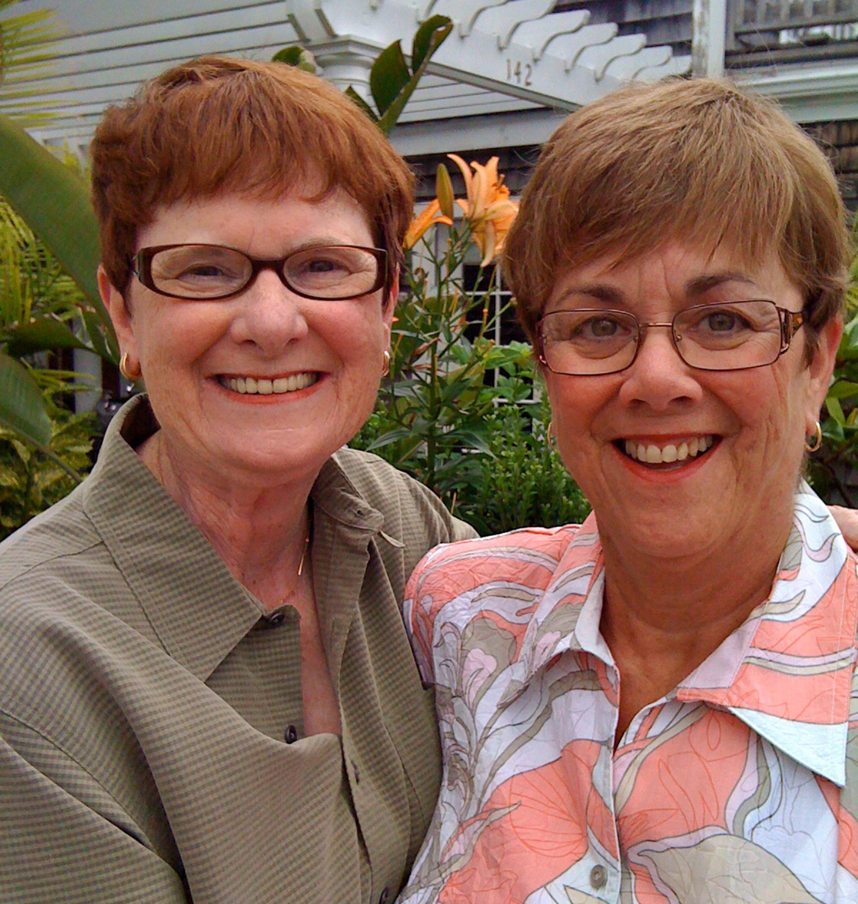

Testimonials
| We are forever grateful for Deb's matchmaking skills. After Mark and I coincidentally became widowed several years ago,
we had both assumed a love match wasn't on our horizon. Little did I know, I would meet my soulmate at 70 thanks to Deb.
Helen & Mark |
|
| Jan and I met through a mutual friend but I was too chicken to ask her out! After just a few counseling sessions
with Deb, I had all the confidence in the world! Now, I can't imagine my life without Jan in it. Thank you, Deb. Sandra & Jan |
 |
| Trish and I have had our fair share of complicated life experiences. We used to let it get in the way of our happiness until
a friend had suggetsed trying couple's counseling. Deb pulled us out of a rut and we are best friends once again. Bob & Trish |